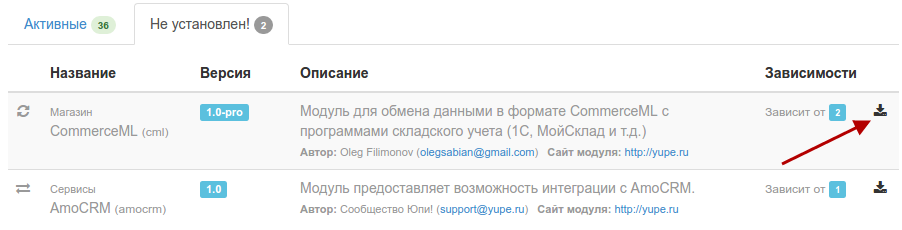
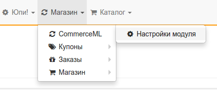
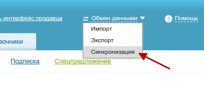
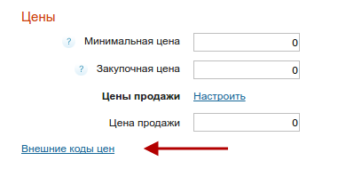

МойСклад
Модуль создан для интеграции с сервисом "МойСклад", но также позволяет обмениваться данными с программами 1С из-за того, что синхронизация осуществляется посредством стандарта CommerceML.
При помощи этого модуля вы можете синхронизировать:
- категории товаров;
- товарные позиции (артикул, описание) с привязкой к категории;
- остатки на складе (количество и стоимость);
- заказы.
Установка
Внимание!
При отсутствии должного технического опыта все перечисленные ниже процедуры лучше доверить профессионалам.
После приобретения модуля вам необходимо распаковать архив и поместить его содержимое в папку protected/modules сайта, который будет подключаться к сервису "МойСклад".
Затем в панели управления сайтом (Юпи! - Мои модули) устанавливаем его.

При условии успешной установки в меню раздела Магазин должен появиться пункт CommerceML

Настройка
Для начала в настройках модуля зададим данные для авторизации пользователя, который будет иметь доступ к синхронизации.

Здесь указываются данные придуманного вами пользователя.
Обратите внимание, что нет никакой необходимости указывать данные администратора или любого другого пользователя зарегистрированного на сайте.
Также мы настоятельно рекомендуем воздержаться от использования простого пароля и секретного ключа. Воспользуйтесь специальными сервисами для их генерации.
Секретный ключ указан для примера и его нужно обязательно заменить.
Оставшиеся поля пока не трогаем, сохраняем изменения и переходим к настройкам в сервисе "МойСклад".
Для этого необходимо перейти в раздел Синхронизация, где нужно кликнуть на кнопку Добавить магазин и в выпадающем списке выбрать пункт Обмен по CommerceML.

Владельцам продуктов 1С
Достаточно подробную инструкцию по настройке 1С Предприятие вы можете найти перейдя по ссылке. Следовать инструкции нужно до раздела "Настройки в интернет-магазине".
На открывшейся странице указываем адрес магазина, который формируется следующим образом: http://ваш-сайт/cml/sync (например https://yupe.ru/cml/sync), и указываем данные пользователя, придуманные ранее.
После этого вы можете нажать на кнопку Проверить соединение, чтобы убедиться в правильности указанных данных. В этом случае появится сообщение "Соединение прошло успешно".

Далее в разделах Заказы и Остатки необходимо выбрать, который из них вы будете выгружать, и указать временные интервалы, через которые будет осуществляться выгрузка.
При необходимости у заказов можно поставить отметку "Отправлять статусы заказов в ИМ", т.е. при изменении статуса заказа в МоемСкладе он будет выгружен на сайт.
Обратите внимание
МойСклад не выгружает в CommerceML формате полные данные заказа. На сайт отправляются только статус заказа, в случае его изменения, и отметка об удалении.
Теперь можно перейти к оставшимся настройкам модуля CommerceML в панели управления интернет-магазином. Мы опишем лишь те, которые могут вызвать хоть какие-то вопросы:
Что делать с категориями, отсутствующими в файле импорта
В каталоге вашего магазина уже могут быть категории, которых не будет в файле выгрузки. На этот случай системе нужно знать, что с ними делать.
Доступны 3 варианта: Ничего, Деактивировать и Удалить.
По умолчанию выбран пункт Деактивировать - это значит, что категории будет присвоен статус Черновик. Она не будет отображаться на сайте, но вы сможете увидеть ее в панели управления.
Что делать с товарами, отсутствующими в файле импорта
Все то же самое, как и у категорий, только у товара будет установлен статус Недоступен, если выбран пункт Деактивировать.
Статус "Нет в наличии" если количество = 0
Если в остатках на складе количество товара равно 0, то товару автоматически будет присвоен соответствующий статус. Данная опция будет работать только при включенной Обновлять количество товара.
"Ид" цены продукта, "Ид" скидочной цены продукта
Системе необходимо определять, которую из цен в файле выгрузки ставить в соответствующее поле товара.
Внимание
Без указания внешнего кода цены на сайте обновляться не будут!
Чтобы узнать эти коды, вам нужно перейти в раздел Справочники - Товары и услуги в МоемСкладе, где кликнуть на кнопке создания нового товара или редактировании уже существующего.
На открывшейся странице, в блоке Цены, нажать на ссылку Внешние коды цен.


Количество и названия цен могут отличаться от указанных на скриншоте
Не забудьте указать выбранные цены в настройках синхронизации сервиса МойСклад, чтобы они попали в файл выгрузки.
На этом все.
Сообщения о количестве выгруженных товаров, загруженных заказов или ошибках, будут доступны на вкладке Отчет в настроенной вами синхронизации в МоемСкладе. См. скриншот выше
AmoCRM
Установка
Скопировать модуль в protected/modules.
Установить зависимости через composer.
$ composer require dotzero/yii-amocrm
Настройка
- Зайти в настройки AmoCRM и скопировать ключ API
- Перейти в "Сервисы" ---> AmoCrm и указать ключ, поддомен, email пользователя AmoCRM, нажать "Сохранить"
- Выбрать из списка поля email и телефон
- Поставить в крон команду
php /<путь к сайту>/protected/yiic amocrm-export